Icarus The Dream App
Icarus is a dream journal app that aims to build the world's largest dream database. The app aims to focus on indviduals seeking insights into their subconscious, health, and well-being.

THE PROBLEM
Journaling and looking for meaning is a lot of effort. There are times where people forget their dreams or dont have the energy to remember or write it down.
The Pitch
Each day brings a familiar routine: our alarms sound off, we slowly blink away the remnants of sleep, and almost instantly, the memories of our dream fade away. A staggering 95% of our dreams evaporate within moments of awakening, depriving us of potential insights. While dream journals are labor-intensive and somewhat antiquated, the available apps often fall short in terms of user experience and design. Introducing 'Icarus', a revolutionary app that's not only user-centric in its design but also excels at capturing and analyzing dreams. Conceived with a visionary approach, 'Icarus' aims to meld our conscious and dream realms, encompassing health, self-exploration, and social connectivity.
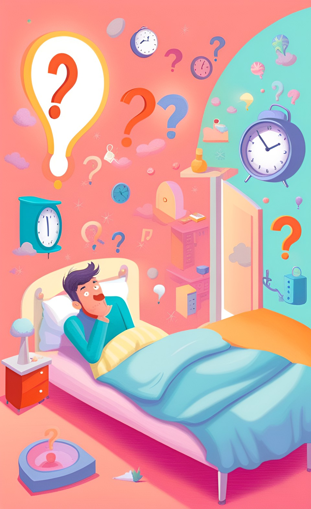THE PROCESS
First off, I aimed to Understand our Stakeholders, Users and Existing Solutions. To holistically understand the problem space and our user needs, I created a research plan that incorporated the following methods.
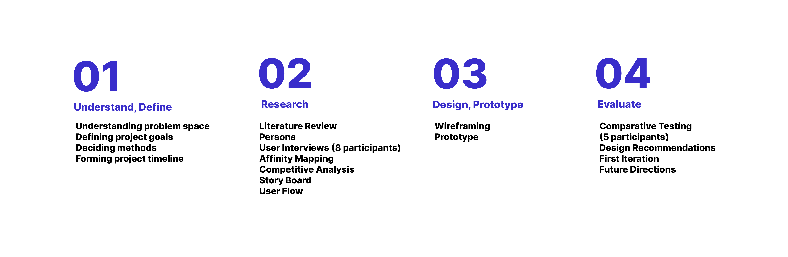THE GOAL
To optimize the user experience of the 'Icarus' app by identifying user needs and preferences in capturing, analyzing, and sharing their dream insights, and ensuring seamless integration with health and self-exploration functionalities. 5 hyptothesis were generated as a way to get us closer to our goals, as each one will be confirmed through each research method.
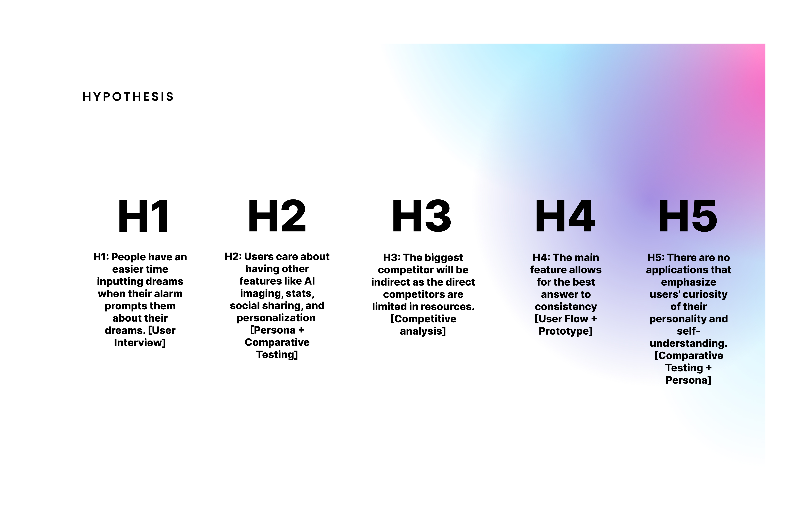LITERATURE
Literature review was done through means of app stores, data.ai, and articles. One important component that was found was there was an app I found in a similar scope that was never created. The "Shadow" App makes recording and remembering your dreams extremely simple. On its most basic level, Shadow is an alarm clock/digital dream journal, but the designers ultimately hope to create the largest dream database in the world. In a similar scope I evision an app that is able to capture the same qualities but the key difference here is the app will come to realization as teh Shadow app never hit market. One thing to note was the shadow app had a kickstart funding that had raised over 100k when 50k was the goal. There is a market for an app like this but it needs to be realized by the power of UX.
Looking through reddit I found a post that mentions the frustrations a user can face from using dream journal apps. The mention of having a feature that makes deram recording simple and quick is a main necessity that most journals fail to create.
One response here mentions the notes the app as a resolve. I'm showcasing this comment as it will foreshadow a discovery that would be found in the coming steps.
USER PERSONA
After creating the affinity map we were able to narrow down our research question to focus on the issues with searching for content. We then created a persona that captured the essence of the users we've researched and interviewed. We also formed a journey map to understand their needs and frustrations.
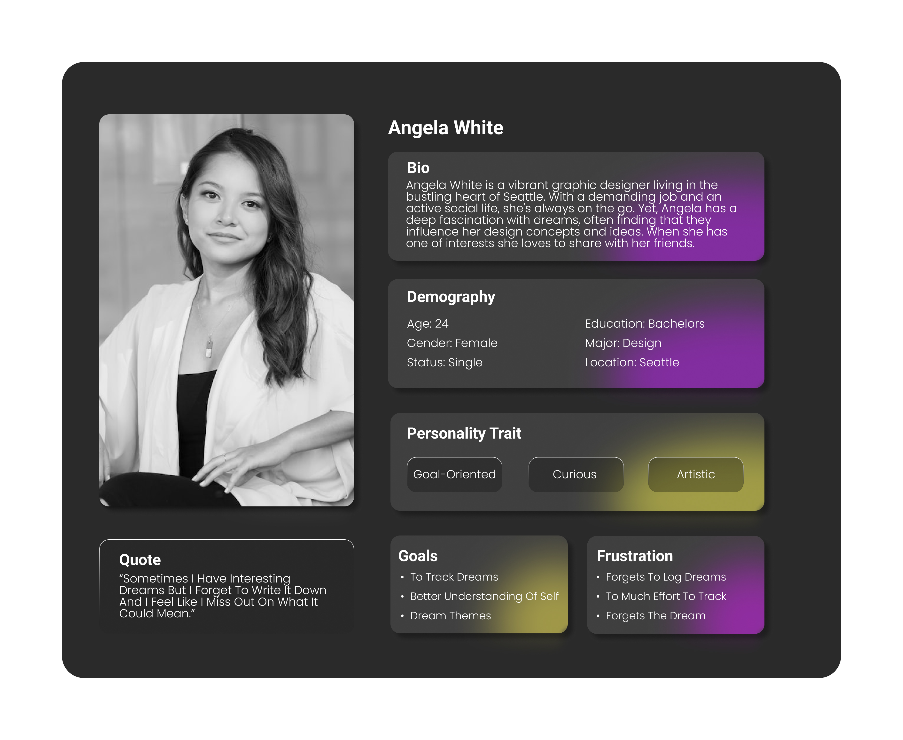SEMI-STRUCTURED INTERVIEWS
After looking at our first set of research, I made a semi structured interview to learn more about how people feel and act when it comes to writing down their dreams. I wanted to talk to younger people, those in Gen Z, and also to people who often remember their dreams. Since I had people ready to interview, I also asked them to try out a 5 minutes thinking outloud task on one of the two popular dream apps from the app store. This helped us see what features people like and gave us some new ideas that could possibly lead to new innovations.
Eight 30-minute qualitative interviews with Users that own an HBO :
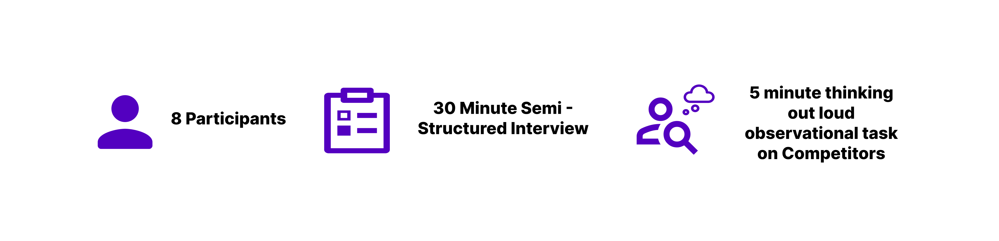Qualitative User Interview Guide Below:
FINDINGS
Based on the affinity map, I was able to generate the following insights by grouping similar notes from the qualitative interviews.
Executive Summary
Given the vast data acquired from the qualitative interviews, I streamlined the affinity mapping to make it more comprehensible. The executive summary zeroes in on our primary challenge: consistency. It also highlights a significant indirect competitor and essential features our app requires to be competitive. Additionally, the summary outlines subsequent steps and recommendations that will shape my next steps into building Icarus.
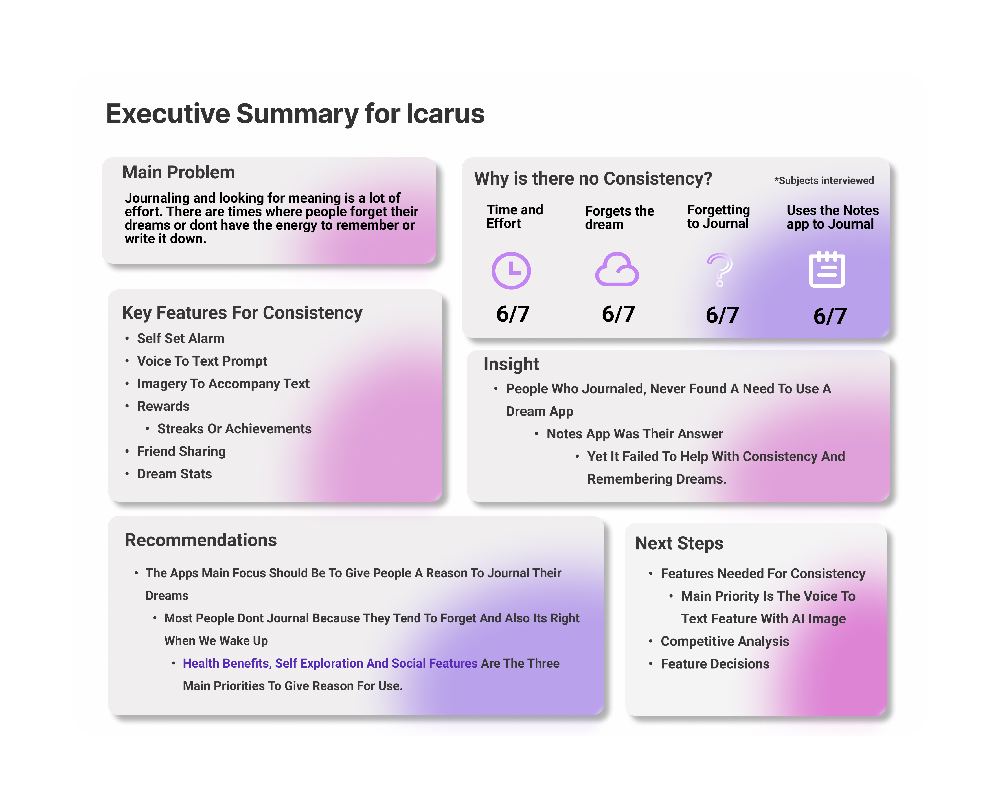Competitive Analysis
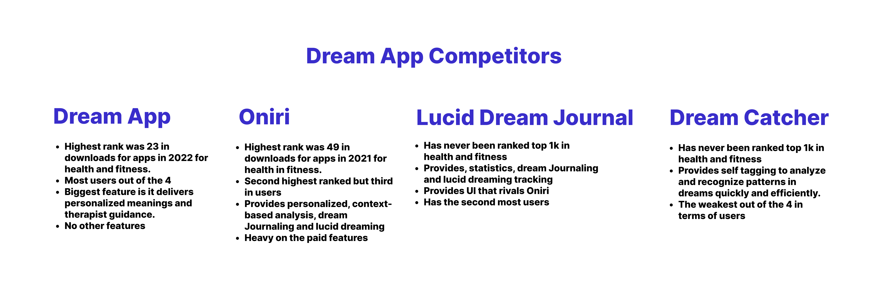Four of the main dream journal competitiors were picked out based on users, and revenue streams.
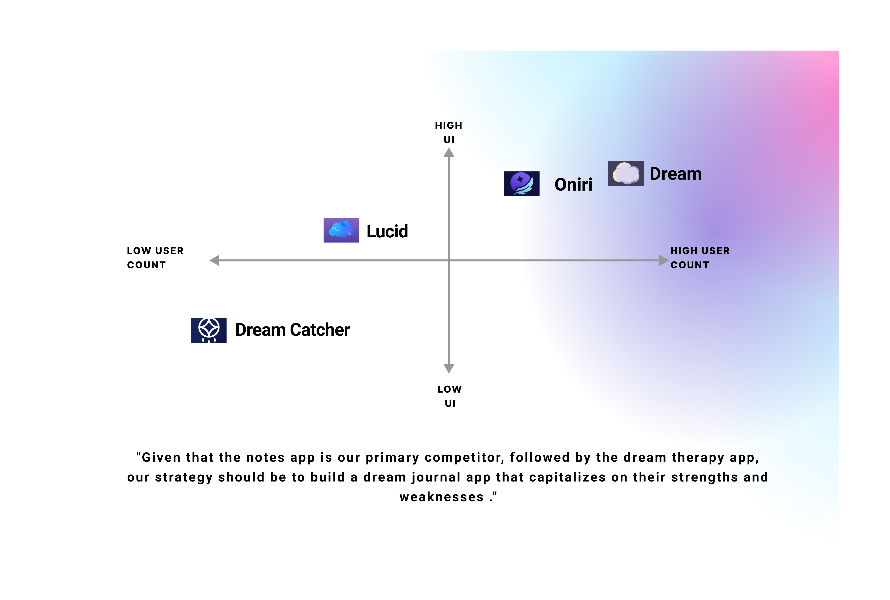Even though these four apps are my competitiors, when I was running the qualitative interviews I found that my main competitor was from an indirect stance, it was the notes app.
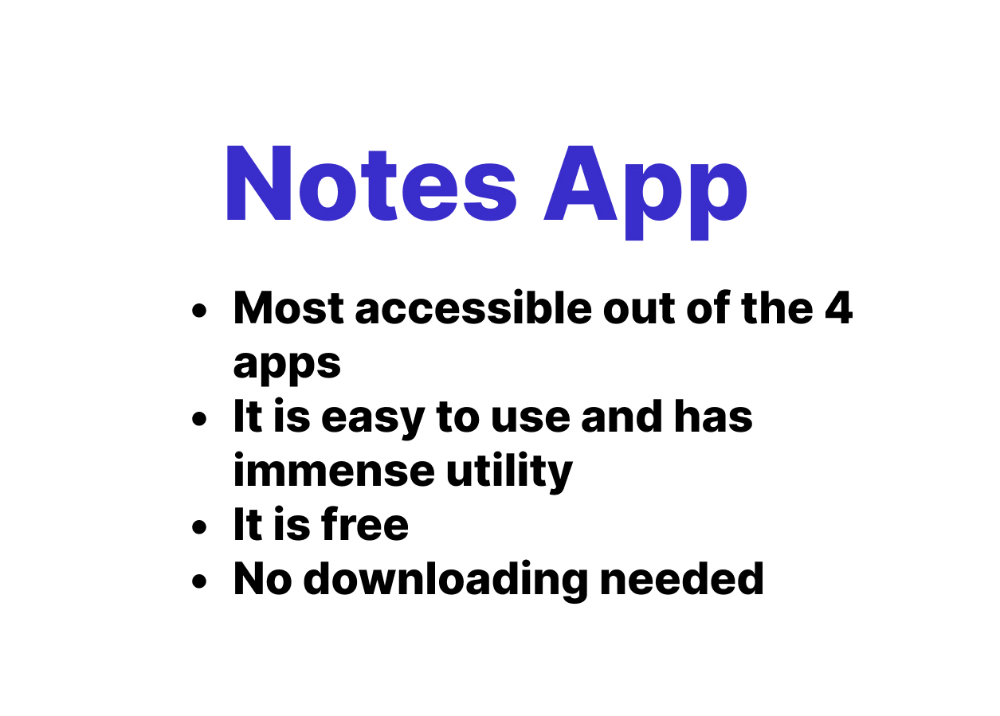Story Board
Based on the findings found from the research and interviews, I created a storyboard, that focused on the main features that were expressed as important from the interviews and resasrch. The features are the same as the ones highlighted below the findings from the afinity map
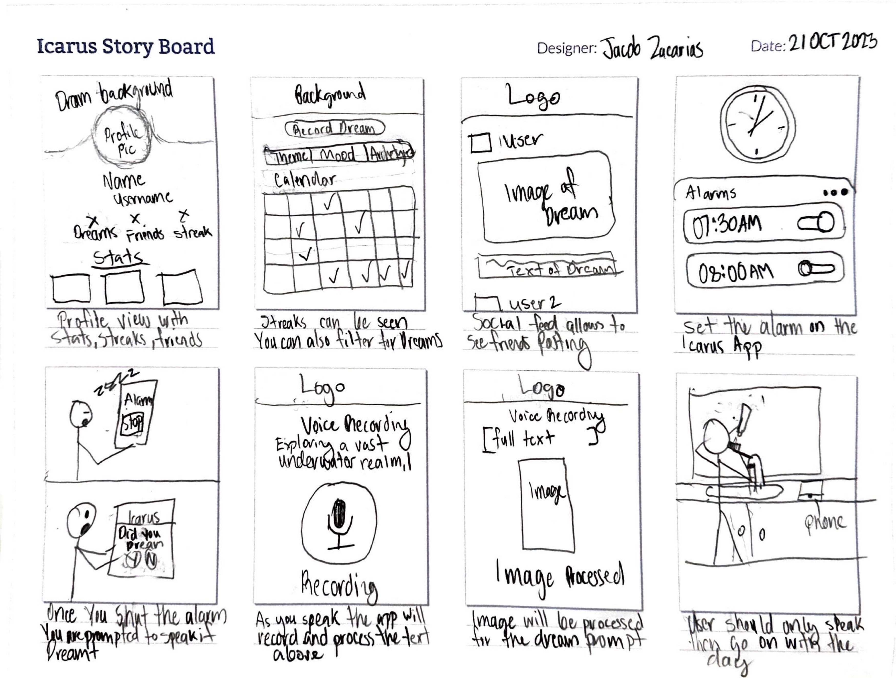User Flow
This user flow creates a seamless journey from setting up an alarm to documenting morning dream recollections. Designed with a user-centric approach, the experience prioritizes ease of use that can lead to consistency and higher quality data collection
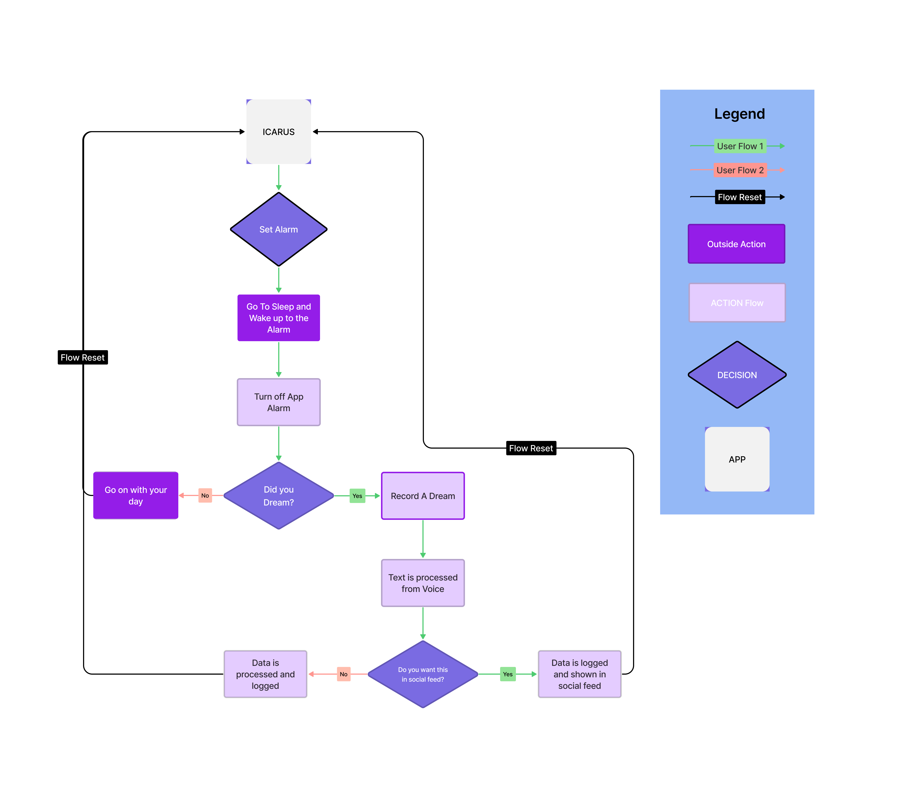Wire Frame
Upon completing the sketched concept seen in the storyboard, I made an initial wireframes in Figma taking into account the design recommendations listed in the storyboard section. My goal with the wireframes was to concretize the function of each feature. I also wanted to take the design aspect out from the protoype to avoid priortizig the funtions desired for the future app. Once the wire frame was completed it will then be tweaked and created to run as a figma protoype.

Comparative Testing
In developing the first iteration of my dream journal app prototype, I aimed to address the central research question: How can I create an app that enhances user consistency compared to its competitors? For this, I compared my medium-fidelity prototype to Oniri, chosen from a competitive analysis based on user-desired functionalities in a dream journal app. The key focus was to identify which features were preferred or disliked between the two apps. While both offered similar functions, Icarus was designed to offer more personalization, deeper insights, and an innovative alarm-to-voice-to-text feature for enhanced consistency.
It's important to note that, due to time and resource constraints, I couldn't prototype the clock feature, which is vital for consistency. Ideally, this would require a diary study focused solely on this feature to understand its effectiveness thoroughly.
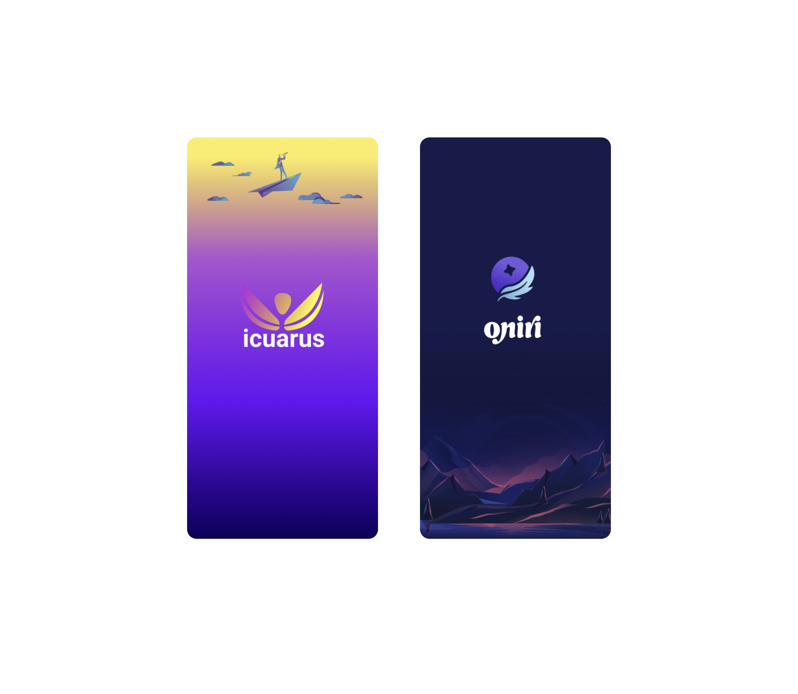The study will be conducted as a 30-minute session via Zoom. Participants will interact with a randomly sorted app, between the prototype or Oniri hosted on Figma. They will be encouraged to think aloud during the session, providing real-time insights and feedback. Following their interaction, participants will complete a Net Promoter Score (NPS) survey before proceeding to interact with a second app and completing another NPS. Post-interaction, participants will rank 10 features identified from the initial data synthesis. To facilitate easier decision-making, these features will be divided into two sets for prioritization. The final part of the study involves two questions accompanied by images of the two apps. The first question seeks to understand their preference between the apps and the reasons for their choice. The second question delves into their likes and dislikes about Icarus, including suggestions for additions or removals.
Results and Recommendations
The feature ranking was based on average scores ranging from 1 to 5. The top three features each scored an average of 2.22, while the bottom three had an average score of 4.0. With a limited participant pool of only five, emphasis was placed on gathering in-depth qualitative data to supplement these scores, given the limited statistical significance. The Net Promoter Score (NPS) revealed similar ratings for both apps, indicating no significant preference. Analysis of the responses to the final two questions, along with insights from the think-aloud tasks, provided valuable qualitative data. This data supported the choice and prioritization of features for future iterations of the app and offered fresh perspectives, such as the implementation of tags.
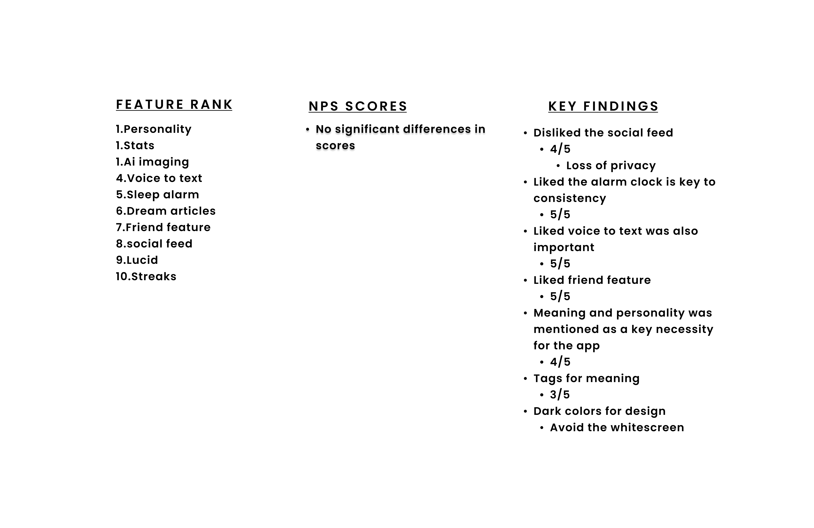First Iteration and Next steps
Initially, I believed a social feed would be a highly desired feature, as initial interviews indicated a strong interest in social aspects. However, subsequent studies revealed a preference for dream privacy. Users expressed a desire for sharing capabilities with friends, but deemed a full social feed as excessive, leading to the removal of the social feed.
I focused on core functionalities: an alarm clock and voice-to-text for dream recording, which were crucial for user consistency. Surprisingly, the lucid dreaming feature, initially thought to be essential, was less important for dream journaling. User feedback also highlighted a preference for simplified interaction, prompting for example an automatic tagging system.
Design-wise, I was made aware to avoid the white backgrouond so the interface was changed to a darker purple theme, aligning with user preferences for a dream app. The final product emphasizes five key features: dream statistics, alarm clock, AI imaging, dream and friend profiles, with additional elements like dream logs and personality insights serving as supplementary enhancements.
With the first iteration complete, the next step is to conduct a usability study that focuses on the main features of the app. There will be a high priority on the top 5 features, with the alarm clock feature being fully showcased to users in real-time. Once this is completed, the second iteration can be utilized to make adjustments to the original functions and design. The final phase should conclude with comparative testing, as I can now concentrate heavily on design since the features have been confirmed.
Key Takeaways
Before starting this program, I aspired to create a dream app but lacked a background in design or UX. I plunged into deep readings, dived headfirst into designing, and blindly added features without knowledge of app development, UI/UX heuristics, and research. Now, having taken my first steps in app development – even attempting to use Xcode for development (which was a significant challenge) – the next steps are to figure out how to monetize the app. Following this, I plan to focus on adding illustrations to enhance the app's experience and use it to attract investors to help bring this app to fruition.